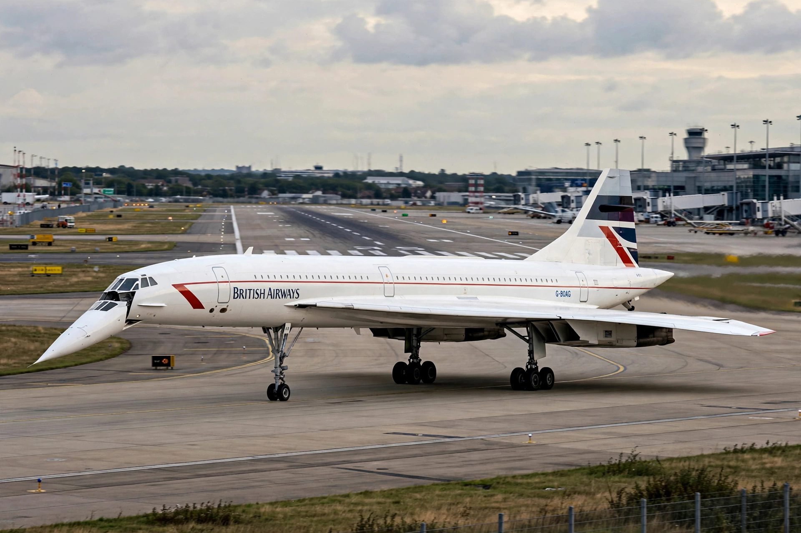

Concorde
From Wikipedia, the free encyclopedia

Concorde, the supersonic airliner.Concorde is a retired Franco-British supersonic airliner, jointly developed by Sud Aviation (later Aérospatiale) and the British Aircraft Corporation. It flew at up to Mach 2.04 (about 2,180 km/h) at 60,000 feet, crossing the Atlantic in about three and a half hours — half the subsonic time. Only 20 were built; British Airways and Air France operated it from 1976 until its retirement in 2003, after a fatal crash in 2000 and rising costs.
Development
Britain and France signed a treaty in 1962 to build a supersonic transport together (the project name came from the French word for \'agreement\'). Concorde first flew in 1969, the same year as the rival Soviet Tupolev Tu-144. Its slender delta wing, droop nose and four Olympus 593 reheated engines were radical engineering.
Service
Scheduled services began in January 1976 to Bahrain, Rio and soon New York (after a political fight over noise). Concorde became a prestige symbol for executives and celebrities; a London–New York ticket cost several thousand pounds, and the aircraft cruised so high that passengers could see the Earth\'s curvature.
Crash and retirement
On 25 July 2000, Air France Flight 4590 crashed after takeoff from Paris, killing 113 people, when debris from a preceding aircraft burst a tyre and ruptured a fuel tank. Modifications returned Concorde to service in 2001, but post-9/11 economics and Airbus ending support led both airlines to retire it in 2003.